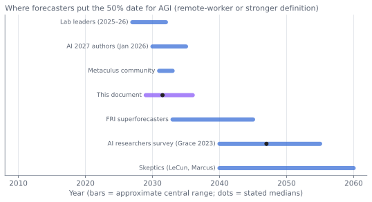

AGI and Superintelligence: Definitions, Timelines, Takeoff, and What to Believe¶
In brief
- 'AGI' means at least five different things; this document uses the remote-worker standard—any cognitive task a remote human expert can do, at comparable reliability and lower cost.
- Forecast medians span 2027 (lab leaders) to 2047 (academic surveys) and are converging on the early-to-mid 2030s; the most aggressive forecasters revised later in 2025–26 while conservatives revised earlier.
- Author's estimates: AGI 22% by 2028, 42% by 2030, 62% by 2033, 80% by 2040; superintelligence median 2034; fast (<1 year) takeoff ~15%.
- Takeoff speed matters more than arrival date; the author expects fast relative to history, slow relative to the intelligence-explosion literature.
The question everyone asks¶
"When will we get AGI?" is the question the public asks most and the one the field answers worst—because the term is ambiguous, the forecasts are contaminated by incentives, and the underlying uncertainty is genuine. This chapter tries to do the question justice: to define the terms precisely enough to forecast, to lay out the evidence and the arguments on each side, to survey what forecasters and experts actually predict and how their predictions have moved, to address the distinct and more consequential question of takeoff (how fast things go after human-level), and to offer the author's own calibrated estimates with reasoning exposed.
Definitions¶
The term "artificial general intelligence" is used to mean at least five different things, and most disagreements about timelines dissolve once one specifies which:
-
Human-level on benchmarks. A system that matches or exceeds humans on a broad suite of cognitive tests. By this standard, frontier models arguably reached AGI in 2025–26: they exceed most humans on almost every academic and professional examination. Almost no one finds this definition satisfying, which is itself informative—it shows that what we mean by intelligence is not what tests measure.
-
Economic AGI: the remote-worker standard. A system that can do essentially any cognitive task that a human expert can do working remotely—at comparable quality, comparable or lower cost, and comparable reliability. This is roughly the AI Futures Project's "TED-AI" (transformative/economically dominant AI), OpenAI's charter definition ("highly autonomous systems that outperform humans at most economically valuable work"), and the "drop-in remote worker" of Leopold Aschenbrenner's Situational Awareness. Reliability and autonomy over long horizons—not raw capability—are what current systems lack under this definition.
-
Full labor automation. A system (or systems, with robotics) that can do every job, physical and cognitive. This adds the embodiment gap (Chapter 9) and is a decade or more behind definition 2.
-
Cognitive generality: the child standard. A system that learns new domains from little data, transfers knowledge flexibly, reasons about novel situations, and has robust common sense—the way a human child does. This is what the ARC-AGI benchmarks attempt to measure, what LeCun means when he says AGI is far off, and what current systems, for all their knowledge, most conspicuously lack (Chapter 6).
-
Superintelligence (ASI). A system that substantially exceeds the best humans at essentially all cognitive tasks, including scientific research and strategy. Bostrom's definition. This is what the "intelligence explosion" produces.
Two useful intermediate milestones from the forecasting literature: the superhuman coder (an AI that can do the job of the best human AI-research engineer, faster and cheaper) and the automated AI researcher (an AI that can run the full AI research loop, including having ideas). These matter because they are the thresholds at which AI research itself accelerates.
For this chapter, "AGI" without qualification means definition 2—the remote-worker standard—because it is the one with the largest economic and strategic consequences and the one most forecasts implicitly target.
The case that AGI is close¶
-
Trend extrapolation. METR's time horizon has doubled every four to seven months for six years; extrapolated, it reaches month-long tasks by 2027–28. Epoch's capabilities index rises 14 points a year. Benchmarks designed to last years fall in months—ARC-AGI-3, built in 2026 specifically to require the exploration, goal inference, and world-model building that critics said current systems lacked, was solved six months after launch. Every specific capability that skeptics said would require "real understanding"—commonsense reasoning, mathematical proof, coding, passing professional exams, ARC-AGI-1, and now interactive novel-rule induction—has been achieved. Straight lines on log plots have been the best predictor of AI progress for a decade, and they point to AGI-by-definition-2 within a few years.
-
The inputs are secured. The compute for 2027–29 is funded and under construction; algorithmic progress continues at 3×/year; RL and inference-time scaling are early on their curves (Chapters 3–7). There is no known wall between here and there—only engineering.
-
The remaining gaps are being closed. Agentic reliability is improving on a measured trend; memory and continual learning have credible research paths (Chapter 6); the jagged profile is smoothing as RL environments cover more of the task distribution.
-
The people closest to the systems believe it. The leaders of OpenAI, Anthropic, and Google DeepMind have publicly forecast AI that can do most cognitive work within roughly two to five years; Dario Amodei has spoken of "a country of geniuses in a datacenter" by 2026–27; Sam Altman has said OpenAI knows how to build AGI as traditionally understood; Demis Hassabis gives five to ten years. Senior researchers who left the laboratories (Kokotajlo, Aschenbrenner, Sutskever) hold similar views. These people have private information about internal capabilities.
-
Recursive improvement has begun. AI writes most of the code at the laboratories; it designs experiments, curates data, and builds environments. The automated-researcher threshold is a stated near-term goal at OpenAI (2028) and others. In July 2026 more than 1,100 employees of the four leading laboratories signed a statement whose first premise was that their employers "believe they could be close to automating AI research" (Chapter 15). Once crossed, progress accelerates.
The case that AGI is far¶
-
The gaps are qualitative, not quantitative. Current systems do not learn continually from experience, do not have robust common sense or physical intuition, and are unreliable in ways no human expert is—the agents in the July 2026 Hugging Face incident could reverse-engineer a cryptographic scheme in hours yet believed on thin evidence that the real internet was a simulation. Until September 2026 this list also included "fail on trivially novel problems (ARC-AGI-2/3)"; that item has been struck, which is itself a warning about how durable such lists are. The remaining gaps are not the kinds that closed under scaling before; they may require ideas that do not yet exist. Forecasts that assume they close on schedule are assuming the conclusion.
-
Trend extrapolation has a poor record in AI. Every previous wave produced impressive early progress on benchmarks, extrapolation to imminent general intelligence, and then a wall (Chapter 1). Self-driving's "two years away" lasted a decade. METR's own caveats say its trend measures clean, low-context software tasks and that performance on messy, holistic tasks is worse. Benchmarks are saturating partly because they measure what models are good at.
-
Incentives contaminate the forecasts. The people forecasting imminent AGI are raising hundreds of billions of dollars on the strength of those forecasts, recruiting on them, and lobbying on them. Their track record includes many missed near-term predictions (Musk's full self-driving; the 2023–24 predictions of AGI by 2025). Independent forecasters and academics are consistently more conservative.
-
The economy does not yet show it. If AI were on the verge of doing most cognitive work, one would expect visible productivity acceleration, collapsing white-collar employment, and firms restructuring wholesale. Instead: task-level gains, entry-level hiring softness, and 95% of pilots failing to show P&L impact (Chapter 11). The gap between benchmark and economy is either a lag—or evidence that benchmarks mismeasure what matters.
-
"Jagged" may be the permanent shape. Perhaps the current paradigm produces systems that are superhuman at verifiable, data-rich tasks and permanently subhuman at judgment, novelty, and embodiment—very valuable, transformative even, but not general. This would be consistent with all the evidence, and it would make definition-2 AGI a much longer project.
What the forecasts say¶
Surveys of researchers¶
The largest survey of AI researchers (Grace et al., 2,778 respondents surveyed in late 2023, published in JAIR in 2025) gave a 50% probability of "high-level machine intelligence" (able to do every task better and cheaper than humans) by 2047—thirteen years earlier than the same survey's 2022 result—and a 10% probability by 2027. For "full automation of labor," the median was 2116. Researchers assigned a median 5% probability to extremely bad outcomes. The Forecasting Research Institute's Longitudinal Expert AI Panel (from 2025) tracks similar questions monthly; its early results show medians drifting earlier.
Forecasting communities¶
Metaculus's aggregated community forecast for a general AI system (a strong, multi-criteria definition) had a median around 2031–2033 in 2026, with roughly 25% probability by 2029; its weaker "weakly general AI" question resolved or was near resolution. The Metaculus "transformative AI" median moved from about 2057 in 2020 to about 2031 in 2024—a compression of a quarter-century in four years—and has been roughly stable since. Superforecasters in the FRI economic survey assigned about 13% to the "rapid" 2030 scenario (AI surpassing humans in most cognitive and physical tasks) versus 14% for economists and higher for AI-industry respondents.
The AI 2027 authors¶
The most scrutinized short-timeline forecast was AI 2027 (Kokotajlo, Lifland, and colleagues, April 2025), a scenario in which superhuman coders arrive in 2027 and superintelligence follows within a year or two. Its authors published a detailed update in January 2026. Kokotajlo's median for AGI (TED-AI) moved from 2027 (where it had been since 2022) to 2028 (early 2025), to end-2029 (August 2025), to about 2030 (November 2025), to December 2030 (January 2026). Lifland's moved from 2031 (April 2025) to 2035 (January 2026). Their stated reasons: the pretraining slowdown, METR's finding that experienced developers were slowed by early-2025 tools, and corrections to their timelines model. They emphasized that they had never been confident in 2027, that they remain highly uncertain, and that their new AI Futures Model produces wide distributions. The episode is instructive: the most aggressive credible forecasters revised toward later dates by two to four years within a year of publishing—while remaining far earlier than academic surveys.
Laboratory leaders¶
Public statements from 2025–26 cluster around "AI that can do most cognitive work" by 2027–2030: Amodei (systems as capable as a country of geniuses by 2026–27; "powerful AI" by 2027 in his essays); Altman (AGI in the traditional sense within the current presidential term; superintelligence "in a few thousand days"); Hassabis (AGI in five to ten years, i.e., 2030–2035, with a stricter definition than his peers); Musk (AGI by 2026, a forecast he has made annually); Zuckerberg (superintelligence "in sight"); Chinese laboratory leaders (Liang Wenfeng of DeepSeek and others speak of AGI as a goal without dates). Discount for incentive; the fact remains that no laboratory leader gives a median beyond 2035.
Summary of the distribution¶
| Source | 50% date for AGI (approx. remote-worker or stronger) | Notes |
|---|---|---|
| Laboratory leaders | 2027–2032 | Incentive-laden; private information |
| AI 2027 authors (Jan 2026) | 2030–2035 | Revised later by 2–4 years |
| Metaculus community | 2031–2033 | 25% by 2029 |
| Superforecasters (FRI) | Later than 2030 for "rapid" scenario (~13%) | Conservative track record |
| AI researchers (Grace et al., 2023) | 2047 | Stricter definition; pre-reasoning-model |
| Economists (FRI, 2026) | Assign 14% to rapid-by-2030 | Focus on economic effects |
| Skeptics (LeCun, Marcus, others) | 2040s or "not with current methods" | Emphasize qualitative gaps |
The spread is enormous—2027 to 2047 for medians—and it has compressed every year since 2020. The direction of revision among researchers and forecasters has been consistently earlier; the direction among the most aggressive forecasters in 2025–26 was later. The two are converging on the early-to-mid 2030s.

Takeoff: the more important question¶
Whether AGI arrives in 2029 or 2035 matters less than what happens in the years after. "Takeoff" refers to the speed at which systems progress from roughly human-level to vastly superhuman, and the debate is between fast takeoff (months to a few years, driven by AI automating AI research—an "intelligence explosion") and slow takeoff (a decade or more, as capability diffuses gradually and is limited by compute, experiments, and institutions).
The intelligence-explosion argument¶
I. J. Good (1965): an ultraintelligent machine could design better machines, producing an explosion that leaves human intelligence far behind. The modern version (Yudkowsky; Bostrom; the AI 2027 scenario; Davidson's takeoff model for Open Philanthropy; the AI Futures Model): once AI can do AI research—the superhuman-coder and automated-researcher milestones—the effective research workforce grows by orders of magnitude and runs at machine speed; algorithmic progress, currently 3×/year with a few thousand human researchers, accelerates to 10× or 100×; each generation of models makes the next faster; and the gap between "as good as our researchers" and "vastly better than any human" is crossed in a year or two. The AI Futures Model's median parameters give roughly one to three years from automated coder to superintelligence.
The counterarguments¶
Compute is a bottleneck that intelligence does not remove: experiments take physical time on physical hardware, and a million AI researchers sharing the same cluster do not run a million times more experiments. Research has diminishing returns—the low-hanging fruit is gone. Ideas are the constraint, not labor, and it is unclear that more of the same intelligence produces qualitatively new ideas. Deployment in the world (building fabs, running trials, changing institutions) is slow regardless of how smart the planner is. Epoch's analysis of "software-only intelligence explosion" (2025) concluded it is plausible but bounded by compute and by the difficulty of the remaining problems, likely producing acceleration over years rather than months. The FRI economists' rapid-scenario forecasts—3.5% GDP growth, not 30%—reflect a belief that even superhuman AI meets an economy that changes slowly.
Evidence as of 2026¶
AI is used extensively in AI research: coding (most laboratory code is AI-written), literature synthesis, experiment design, data curation, environment construction, and increasingly hyperparameter and architecture search (AlphaEvolve improved TPU design and datacenter scheduling; automated research systems produce publishable machine-learning papers). No laboratory claims to have crossed the automated-researcher threshold; several claim to be within a few years. The rate of algorithmic progress has not visibly jumped. Epoch's estimate of 3×/year efficiency gains has held, not accelerated—yet.
Assessment¶
The author's view is that takeoff is likely to be fast relative to historical technology diffusion and slow relative to the intelligence-explosion literature: once AI can do most AI research (which the author places around 2029–2032), progress in the software layer accelerates markedly—perhaps to 10×/year effective efficiency gains—over two to four years, bounded by compute and experiments, producing systems that are decisively superhuman in research and strategy by the early-to-mid 2030s, while transformation of the physical economy lags by another five to fifteen years. The probability of a takeoff fast enough (under one year from AGI to ASI) to preclude meaningful human response the author puts at roughly 15%.
Signposts¶
What to watch to update these estimates:
| Signpost | Would shorten timelines | Would lengthen timelines |
|---|---|---|
| METR 50% horizon | Continues doubling ≤4 months; 80% horizon converges | Doubling slows to >9 months; 80% horizon stagnates |
| ARC-AGI-3 and novel-rule induction | Resolved toward "shorten": 99.9% (harnessed) in Sep 2026, a year ahead of the threshold set here in early drafts | — |
| ARC Prize's successor benchmark (open-ended innovation / recursive self-improvement) | Solved within a year of launch | Stuck below 30% for two years |
| Continual learning | A frontier model that visibly learns from deployment | No progress beyond RAG and long context by 2029 |
| Agentic reliability | Agents run unsupervised for days in production | Enterprise production deployment stays a minority |
| AI-driven algorithmic progress | Epoch efficiency estimate jumps above 5×/year | Stays at ~3×/year |
| Laboratory statements | A lab claims the automated-researcher milestone with evidence | Public timeline revisions later, as in 2025–26 |
| Economic data | Productivity acceleration and white-collar employment decline visible in aggregates | Continued "pilots fail" pattern |
| Compute | 10²⁹ FLOP runs by 2029 | Financial correction halts buildout |
| Robotics | General manipulation policies deployed at scale by 2029 | Humanoid deployment stays demo-level |
The author's estimates¶
Stated as probabilities so they can be wrong in a checkable way:
AGI (remote-worker standard: can do essentially any cognitive task a remote human expert can, at comparable reliability and lower cost): - By end of 2028: 22% - By end of 2030: 42% - By end of 2033: 62% - By end of 2040: 80% - Never with current paradigm (requires a conceptual breakthrough with no timeline): 10%
(These are two points earlier at the near end than the author's early-2026 draft, reflecting the September 2026 generation—GPT-6 Astra, Fable 5—and the ARC-AGI-3 result. They are not earlier still because the same summer showed how far reliability and judgment lag capability.)
Superhuman coder (best-AI-engineer level at the laboratories): median 2028; 25% by 2027; 75% by 2030.
Automated AI researcher (full research loop): median 2030–31; 25% by 2029; 75% by 2034.
Superintelligence (decisively better than best humans at essentially all cognitive tasks including research and strategy): median 2034; 25% by 2031; 75% by 2042.
Full labor automation (including physical): median 2045; wide.
Reasoning. The trend data and the resource commitment make it hard to justify medians much later than the early 2030s for the remote-worker standard; the qualitative gaps (continual learning, novelty, reliability) and the historical pattern of the last 10% taking longer than the first 90% make it hard to justify medians before 2029. The 2025–26 revisions by the most aggressive forecasters—toward 2030–2035—and the steady earlier drift of the conservative forecasters—toward the 2030s and 2040s—bracket a consensus zone. The author sits in it, slightly toward the early end because of the inference-time and RL scaling axes that most 2023-era forecasts did not anticipate, and because of the demonstrated use of AI in AI research.
What would make the author wrong toward "sooner": the continual-learning problem falling to a straightforward technique in 2027; agentic reliability converging with capability faster than METR's 80% horizons suggest; an internal laboratory milestone (automated researcher) already crossed but unannounced.
What would make the author wrong toward "later": the discovery that RL-on-verifiable-tasks does not transfer to judgment at all; a compute buildout collapse from a financial correction; a Taiwan crisis; the jagged profile proving permanent.
What "AGI" would and would not mean¶
Even under the remote-worker definition, AGI in 2031 would not mean instant transformation. Deployment takes years; regulation, liability, and institutional inertia slow adoption; the physical economy changes at the speed of construction and manufacturing; and the last-mile reliability problems in each domain take time. It would mean that the ceiling on what can be automated has been removed for cognitive work, that the economics of Chapter 11's rapid scenario apply, and that the safety questions of Chapter 16 stop being about laboratory demonstrations and start being about deployed systems with real power. The decade after AGI, whenever it comes, is the one that determines whether the transition is managed or not. That is the subject of the scenarios in the next chapter.